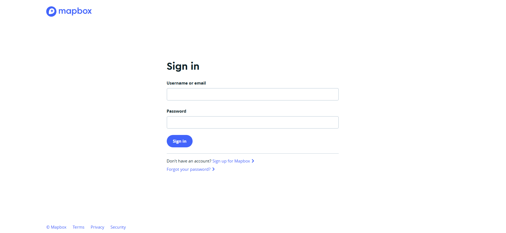
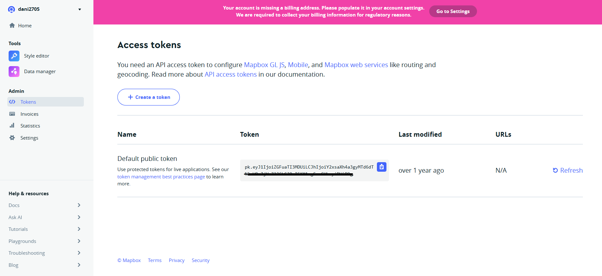

Langkah-langkah berikut akan membimbing Anda untuk membuat akun dan mendapatkan token dari layanan Mapbox.
-
Buka Situs Resmi Mapbox
Kunjungi:
https://account.mapbox.com
-
Lakukan Registrasi
Daftarkan akun menggunakan email aktif pada halaman login seperti berikut:

Gambar 1: Halaman Pendaftaran Mapbox
-
Masuk ke Akun Anda
Setelah berhasil login, Anda akan diarahkan ke dashboard utama.
-
Buka Menu Access Tokens
Pilih menu Access Tokens dari panel kiri.
-
Gunakan atau Buat Token Baru
- Gunakan token default yang sudah tersedia
- Atau klik "Create a token" untuk membuat token baru dengan hak akses terbatas

Gambar 2: Menu Access Tokens pada Mapbox
Catatan Keamanan:
- Jangan bagikan token Anda secara publik.
- Gunakan token dengan hak akses minimum yang diperlukan.
- Simpan token Anda di tempat yang aman.